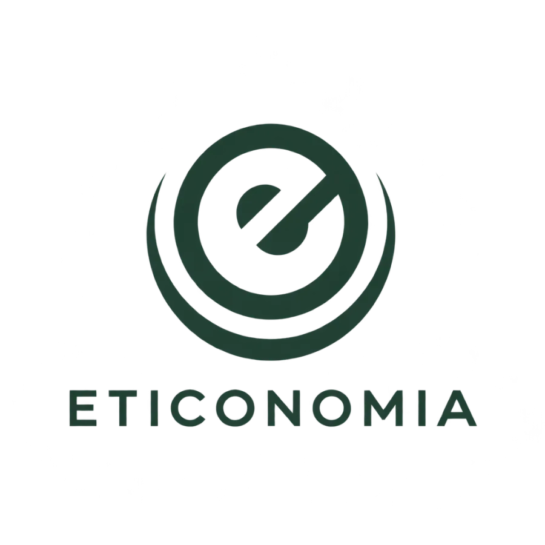

Contatti
-
Scandriglia (RI)

Una visione per orientare secondo principi etici le scelte dell'impresa, del mercato, della finanza e dei consumi, nel rispetto della dignità umana, della società e dell'ambiente.

Eticonomia nasce per mettere la dignità umana, le relazioni e il bene comune al centro del valore che creiamo e condividiamo.
Perché un'economia si riconosce anche dalla vita che rende possibile.
Scopri la visioneIl modo in cui lavoriamo, produciamo e condividiamo il valore ha conseguenze che riguardano tutti noi.
Eticonomia invita a riconoscerle attraverso quattro responsabilità, strettamente legate tra loro.
Scegliere con consapevolezza, considerando gli effetti delle proprie azioni.
Riconoscere la dignità di ogni persona e creare spazio per esprimerne le capacità.
Coltivare relazioni eque, favorire la partecipazione e contribuire al benessere delle comunità.
Avere cura delle risorse e dei luoghi che abitiamo, pensando anche a chi verrà dopo di noi.
Dietro ogni prodotto, servizio e attività ci sono persone che mettono a disposizione tempo, capacità, idee e impegno.
Da questo contributo nasce una domanda: come possiamo fare in modo che il valore generato diventi un'opportunità di crescita condivisa?
La proposta eticonomica riconosce il contributo di ciascuno e mette in relazione il risultato dell'impresa con il benessere delle persone e della comunità.
Approfondisci il modelloLa moneta complementare è al cuore dell'applicazione della visione eticonomica: uno strumento per collegare la condivisione del valore alle possibilità di utilizzarlo.
Il Talento affianca l'euro e può essere utilizzato per coprire una parte degli acquisti presso le attività del circuito, secondo le condizioni di accettazione previste.
Il suo significato si esprime nella circolazione: i Talenti ricevuti possono diventare acquisti di beni e servizi, mettendo in relazione le persone con le imprese e i professionisti aderenti.
Attraverso Talentya si entra nell'ecosistema.
Scopri la moneta complementareFondato da Fulvio Rinaldi, il progetto Eticonomia viene presentato pubblicamente nel primo congresso nazionale del 2015.
Da allora, incontri e contributi di pensiero ne accompagnano l'approfondimento. Tra questi, i volumi di Antonio Foglio offrono una trattazione sistematica della visione eticonomica.
Conosci la storia di EticonomiaComprendere il rapporto tra economia e vita delle persone richiede conoscenza e capacità di giudizio.
La formazione sviluppa consapevolezza, capacità di scelta e responsabilità, per tradurre la crescita personale in azioni che generano valore anche per gli altri.
Esplora la formazioneTalentya è il modello operativo di Eticonomia: l'ecosistema in cui i suoi principi trovano applicazione attraverso persone, attività, formazione e servizi.
Attraverso Talentya si accede al percorso operativo e al circuito di imprese e professionisti.
Scopri il rapporto tra Eticonomia e TalentyaConferenze, dialoghi, video e pubblicazioni permettono di conoscere il pensiero eticonomico attraverso le voci e le esperienze che lo accompagnano.
Esplora incontri e contributiPer approfondire il progetto, proporre un incontro o condividere un contributo, entra in contatto con noi.